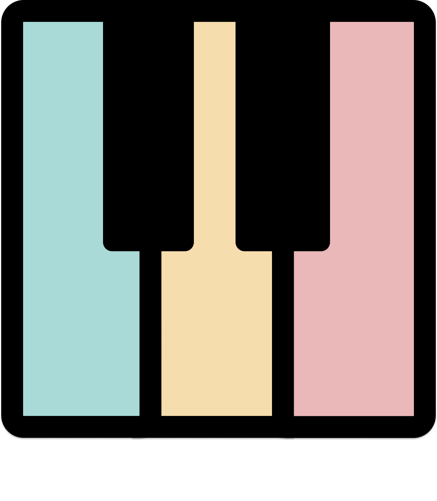

to improvise cool chord progressions
and melodies
with more
ease ..
.. instead of spending tedious time drawing, note by note?
I created this course because so many piano teachers think you need to learn sight reading and
classical
music (which is totally good, but not essential) in order to play piano as a producer.
However, I know that all you need to learn is how to play chords, with exciting colors, which you can
implement
directly in your studio sessions.
And it's even affordable!
How this course will help you as a producer:

Explore sounds, melodies and chords faster
Record your ideas faster
Make your productions sound more human and alive and less midi-ish
More ways to find inspiration for starting new songs
Jam with co-writers or singers
Perform your songs live together with others
It’s really fun to learn new instruments
Hi, my name is Petter. I’m a jazz pianist, producer, and songwriter who’s played throughout most of Europe
& Africa. I did my masters at the Music Conservatory in Copenhagen, and I’m basically crazy
about music and
the piano.
As a piano and songwriting teacher, I’ve had many producers, working with big names like Coldplay, Justin
Bieber etc, come to me with the same frustration of only feeling safe in a few keys on the piano.
I will give you the method that helps my students overcome their prison and become free to play
chords in
all keys and using any possible color.
for
50€
You get:
24/7 and lifetime access to my online video course, that will take you from a piano
noob to
a well-playing piano producer
A practice partner that shows you exactly what to do and makes it fun to practice piano
4 hours (67 videos) of play along material where you play together with me, note by
note
Piano overview – a method that will teach you to navigate chords in all keys
effortlessly for the rest
of your life
Exciting colors of chords – to give your songs the feel you're looking for
Good timing for when you record
Hand coordination – play awesome chords and arpeggios with both hands
including:
Satisfaction guarantee, if the course is not what you need, I’ll give you a full refund.
Support: reach out to me if you get stuck and I'll do my best to help.
My name is Petter, I love to help songwriters and producers achieve their artistic dreams. I have a masters
degree from the Rhythmic Music Conservatory in Copenhagen.